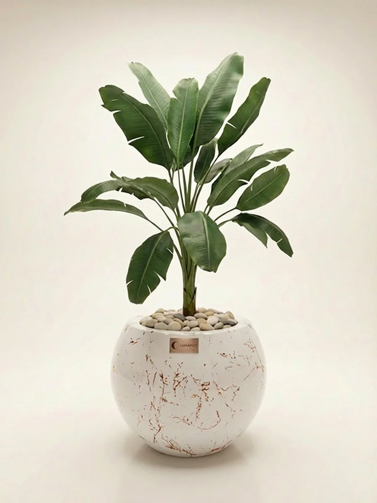

LUNAPOT MAĞAZAKendine bir
Kendine bir
köşe seç.
Saksılar, topraklar ve yaşam alanına iyi gelen küçük şeyler.
FORM / DOKU / YAŞAM

GÜZEL BİR YERDEN BAŞLA
Tüm ürünler
İhtiyacına göre seç, fiyatına göre sırala.
İÇİN RAHAT OLSUN.
01Hangisi bana uygun?Ürün seçim rehberine göz at.02İade & alışverişKoşulları tek yerde incele.03Aklında bir soru mu var?Bize ulaş, birlikte bakalım.